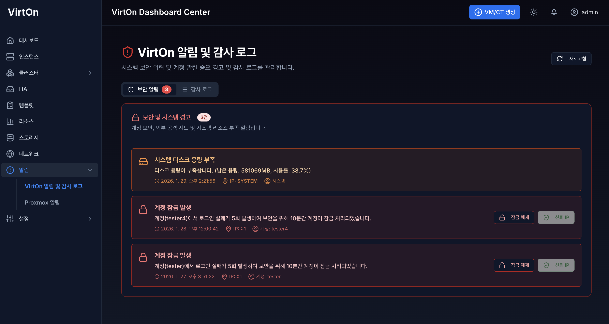
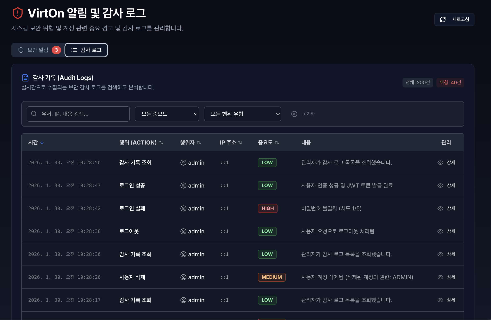
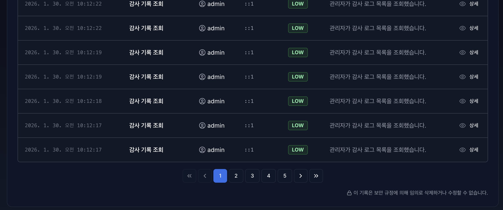
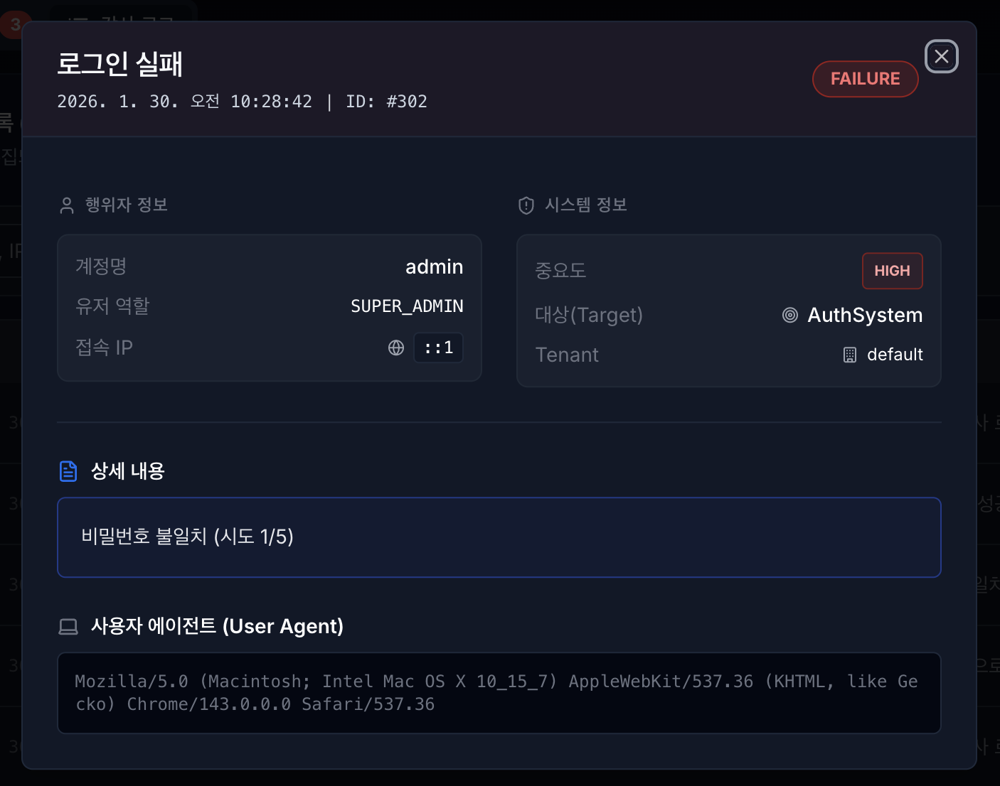
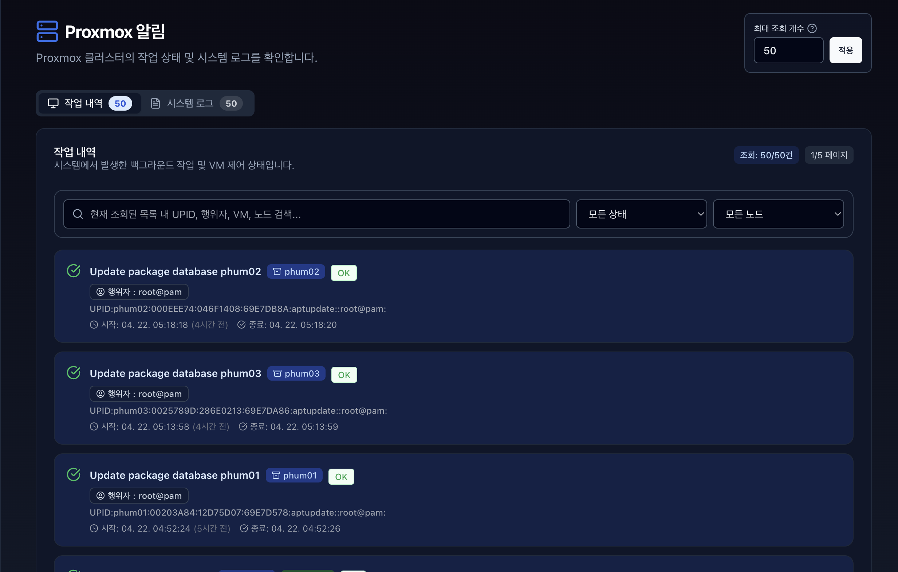
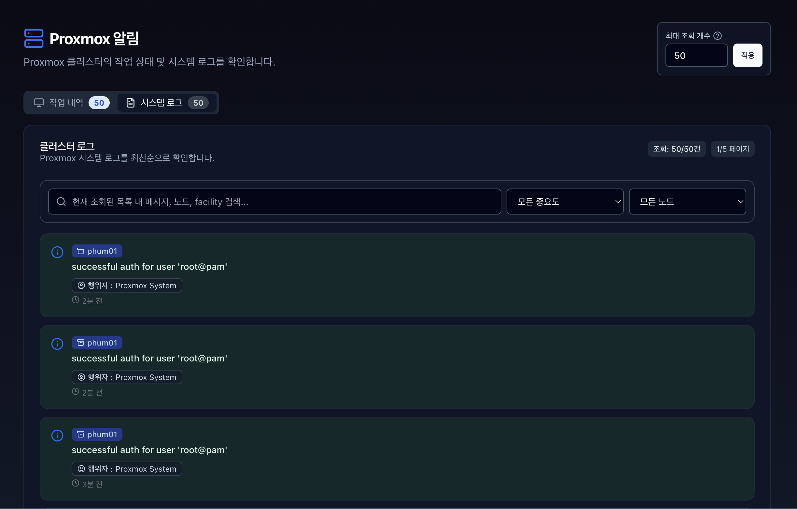
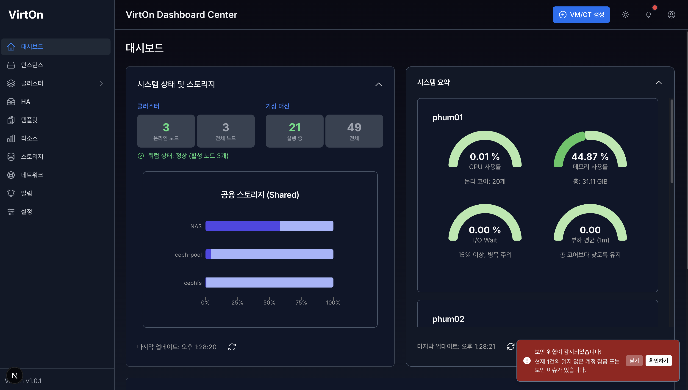
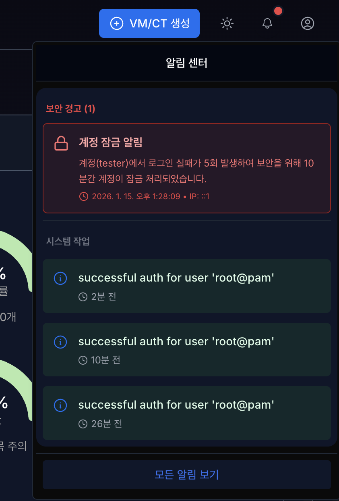
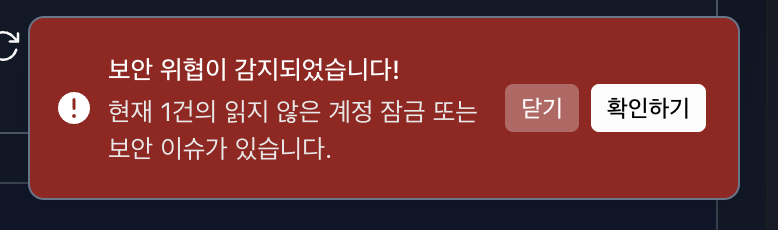

4.1 알림 (Notifications)#
알림 페이지는 보안 경고 알림과 작업(Tasks) 그리고 로그(Cluster Log)는 시스템에서 발생하는 보안 감사 알림과 행위를 추적하고 기록하는 핵심 기능입니다. 관리자는 감사 로그도 확인이 가능하며 실시간으로 수집되는 보안 감사 로그를 검색하고 분석하는 기능입니다.
보안 알림과 Proxmox 관련 알림은 최대 20개까지 보이며, 1분마다 실시간으로 업데이트 됩니다.
감사 로그는 변화가 있을 시 실시간으로 업데이트되며, 페이지별로 전체 로그를 확인 가능하며 한 페이지당 15개까지 보입니다.
또는, 새로고침 으로 즉시 업데이트 할 수 있습니다.
사용 전 확인사항#
구분 |
내용 |
|---|---|
필요 권한 |
보안 경고는 역할별로 조회 범위가 달라지고, 감사 로그 전체 조회는 ADMIN 및 SUPER ADMIN 권한이 필요합니다. |
데이터 기준 |
보안 알림과 Proxmox 알림은 최대 20개, 감사 로그는 페이지당 15개 기준으로 표시됩니다. |
갱신 방식 |
보안 알림은 1분마다 갱신되며, 감사 로그는 변경 시 실시간 갱신됩니다. 새로고침으로 즉시 재조회할 수 있습니다. |
보관 정책 |
감사 로그 파일은 20MB 또는 하루 단위로 압축되며, 용량에 문제가 없으면 6개월 동안 보관됩니다. |
4.1.1 보안 경고 알림 - (VirtOn 알림 및 감사 로그 페이지)#

보안 경고 목록 : 사용자의 계정 잠금, 비정상 접속 시도 등 보안 관련 중요 알림입니다.
권한에 따른 경고 목록 : 보안 경고 목록은 권한(role)에 따라 다르게 보입니다.
ADMIN 및 SUPER ADMIN : 모든 사용자의 보안 관련 알림을 확인할 수 있으며, 관련 IP 블랙리스트 차단 및 유저 잠금 해제가 가능합니다.
USER 및 VIEWER : 로그인 한 사용자의 보안 관련 알림만 확인이 가능합니다.
잠금 해제 버튼 : 로그인 실패로 잠금 처리 되어진 계정의 잠금을 즉시 해제할 수 있습니다.
IP 차단 : 보안 관련 알림에서 의심되는 IP를 즉시 차단 합니다. 총 3개의 상태가 있습니다.
IP 차단 : 의심되는 IP를 즉시 차단 합니다.
차단됨 : 이미 차단 되어진 IP입니다.
신뢰 IP : 화이트리스트에 등록된 신뢰 IP입니다.
시스템 상황 알림 : 시스템 감사 로그를 저장할 디스크 용량이 부족하거나 포화 대응을 실시할 때 오는 알림입니다.
디스크를 90% 이상 사용하거나 100MB 미만 남으면 경고 알림
남은 용량이 50MB 미만이면 ‘삭제’ 행동 개시 알림, 이때 삭제는 가장 오래된 압축 로그부터 여유 용량이 생길 때까지 진행됩니다.
4.1.2 감사 로그 - (VirtOn 알림 및 감사 로그 페이지)#
Audit Log는 시스템 내에서 사용자가 수행한 모든 활동(행위)에 대한 법적/보안적 증거 기록입니다. 로그인, VM 제어, 설정 변경 등 “누가, 언제, 어디서, 무엇을 했는지”를 투명하게 제공하여 보안 사고 발생 시 추적 자료로 활용됩니다. 감사 로그는 DB 뿐만 아니라 backend/logs/audit 폴더에 로그 파일로도 저장됩니다. 로그 파일들은 20MB 또는 하루 단위로 압축되며 용량이 문제가 없다면 6개월동안 보관됩니다.

접근 권한 : 감사 로그는 보안상 매우 민감한 정보이므로, ADMIN 및 SUPER ADMIN 권한을 가진 관리자만 접근 및 조회가 가능합니다.
주요 기록 항목 :
시간 (Timestamp) : 행위가 발생한 정확한 시간입니다.
행위 (Action) : 수행한 작업의 종류(로그인, 생성, 삭제, 수정 등)입니다.
사용자 및 역할 (행위자) : 작업을 수행한 계정명과 당시의 권한 등급입니다.
접속 IP 주소 : 작업을 요청한 클라이언트의 IP 주소입니다.
중요도 : 행위의 중요도를 나타냅니다. LOW (일반), MEDIUM (주의), HIGH (경고) 레벨로 나뉩니다.
내용 : 해당 행위에 대한 디테일한 내용입니다.
상세 버튼 : 해당 감사 로그의 상세 정보를 볼 수 있습니다.
검색 및 필터 : 다량의 로그 중 유저, IP, 내용 등을 검색 가능하며 행위나 특정 중요도 필터로 원하는 기록을 빠르게 찾을 수 있습니다.
리스트 정렬 기능 : 리스트에서 날짜, 행위, 행위자, IP 주소, 중요도를 오름차순 또는 내림차순으로 정렬이 가능합니다.
실시간 업데이트 : 화면을 새로고침 하지 않아도 새로운 감사 로그가 발생하면 실시간으로 목록 최상단에 업데이트됩니다. (한 페이지당 15개씩 표시)

페이지네이션 : 1페이지당 15개, 5개의 페이지 표시, 편리한 간편 이동 버튼이 존재 합니다.

결과 (Status) : 해당 작업의 성공(Success), 실패(Failure) 여부를 확인 가능합니다.
행위자 정보 : 계정명, 역할, IP를 확인 가능합니다.
시스템 정보 : 중요도, 대상(Target), 테넌트 ID (멀티 테넌트 구현 시 정상값 출력, 현재 default) 정보 확인 가능합니다.
상세 내용 및 사용자 에이전트 : 상세 내용과 사용자 에이전트 (UA)를 확인이 가능합니다. 이때 UA는 사용자를 대신하여 일을 수행하는 소프트웨어의 식별 정보입니다.
4.1.3 작업 (tasks) 이력 - (Proxmox 알림 페이지)#

Tasks는 서버에서 실행된 개별적인 작업(Process)의 상세 실행 기록을 보여줍니다. 가상 머신의 시작/종료, 백업, 스냅샷 생성 등 시간이 소요되는 모든 능동적인 행위가 여기에 기록됩니다.
상세 상태 확인: 작업이 현재 진행 중(Running)인지, 성공(OK)했는지, 실패(Error)했는지등을 실시간으로 추적합니다. 해당 행위가 언제 시작했는지 언제 종료되었는지도 확인이 가능합니다.
통합 모니터링: 여러 대의 노드가 묶인 환경에서 “누가(행위자), 언제, 어떤 노드에서, 무엇을 했는지” 한눈에 파악할 수 있게 해줍니다.
시스템 이벤트 기록: 사용자가 의도한 작업뿐만 아니라, 클러스터 쿼럼(Quorum) 변화, 노드 온라인/오프라인 상태 등 시스템 내부의 자동적인 변화도 기록됩니다.
필터링 및 검색: 작업을 검색할 수 있으며, 현재 존재하는 상태 및 노드별 필터링이 가능합니다.
최대 조회 개수 설정: 작업 내역과 시스템 로그의 최대 조회 개수를 설정할 수 있습니다.
기본 50개이며 최대 500개까지 설정할 수 있습니다.
200개 이상 설정 시에는 병목 현상이 발생할 수 있으니 주의바랍니다.
해당 설정값은 영구적인 저장값이 아니므로 캐시 초기화 시에는 다시 설정해야합니다.
입력 및 조회 범위#
항목 |
기준 |
|---|---|
Tasks 조회 개수 |
기본 50개, 최대 500개까지 설정할 수 있습니다. |
권장 조회 개수 |
200개 이상은 화면 응답 지연이 발생할 수 있으므로 필요한 경우에만 사용합니다. |
필터 조건 |
상태, 노드, 검색어를 조합하여 작업 이력을 조회합니다. |
4.1.4 클러스터 로그 이력 - (Proxmox 알림 페이지)#

Cluster Log는 개별 노드에서 발생하는 Tasks를 포함하여, 클러스터 전체 시스템에서 발생하는 주요 이벤트를 시간순으로 요약해서 보여주는 통합 뷰어입니다. 필터링 및 검색이 가능합니다.
4.1.5 상단 및 하단 알림#



우측 상단 메뉴 : 종 모양의 버튼을 클릭 시 보안 경고 알림과 최근 알림 3개가 표시되며, 모든 알림 보기 버튼 클릭 시 알림 페이지로 이동합니다.
우측 하단 경고 알림 : 보안 위협이 감지된 읽지않은 알림이 있다면, 계속해서 표시됩니다.
닫기 : 읽을 때 까지 화면 이동 시에 경고 알림 창이 다시 표시됩니다.
확인하기 : 즉시 알림 페이지로 이동합니다.
새로운 알림 : 새로운 보안 관련 경고 알림이 있다면 알림을 읽을 때 까지, 상단 종 모양 옆의 빨간 점과 하단의 경고 표시는 닫기 전까지 사라지지 않습니다.
4.1.6 문제 해결 방법#
증상 |
확인 항목 |
조치 방법 |
|---|---|---|
보안 알림이 보이지 않음 |
사용자 역할, 본인 알림 여부 |
ADMIN/SUPER ADMIN은 전체 알림, USER/VIEWER는 본인 관련 알림만 보이는지 확인합니다. |
감사 로그 접근 불가 |
계정 권한 |
ADMIN 또는 SUPER ADMIN 계정으로 접속합니다. |
잠금 해제 실패 |
대상 계정 상태, 관리자 권한 |
계정 잠금 상태와 관리자 권한을 확인하고 다시 수행합니다. |
IP 차단 실패 |
IP 상태, 화이트리스트 여부 |
이미 차단된 IP 또는 신뢰 IP인지 확인합니다. |
로그 조회 지연 |
조회 개수, 필터 조건 |
조회 개수를 줄이고 날짜/상태/노드 필터를 적용합니다. |
감사 로그 용량 경고 |
디스크 사용률, 압축 로그 보관 상태 |
보안 알림의 용량 경고를 확인하고 오래된 압축 로그 정리 상태를 점검합니다. |